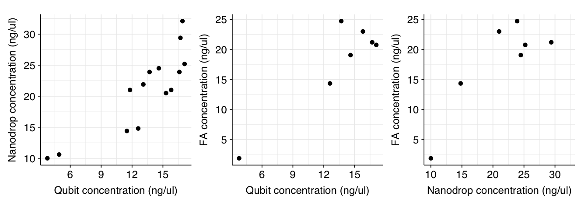
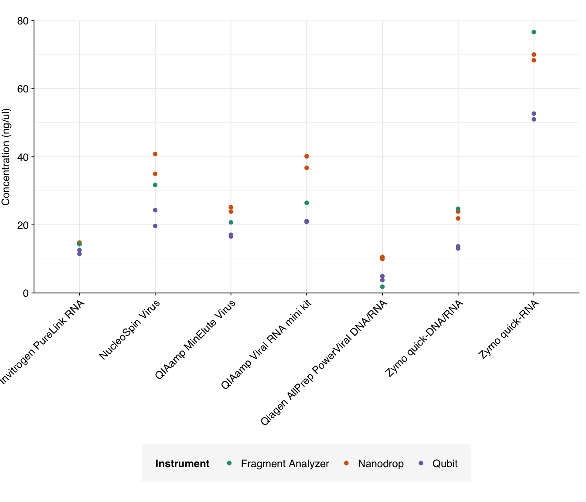
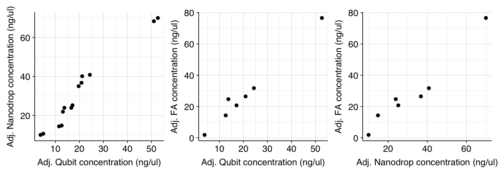
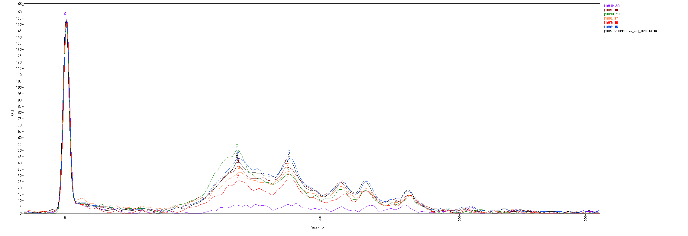
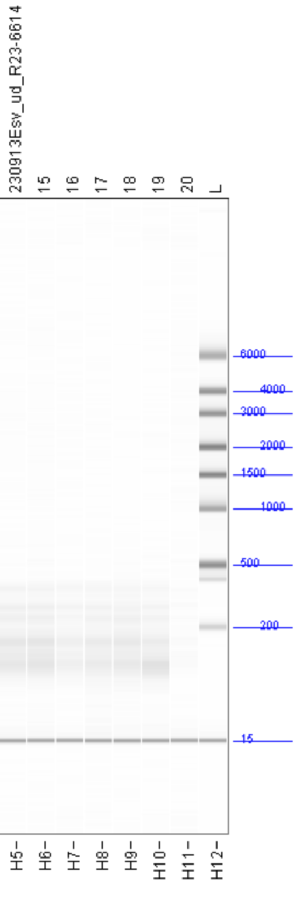
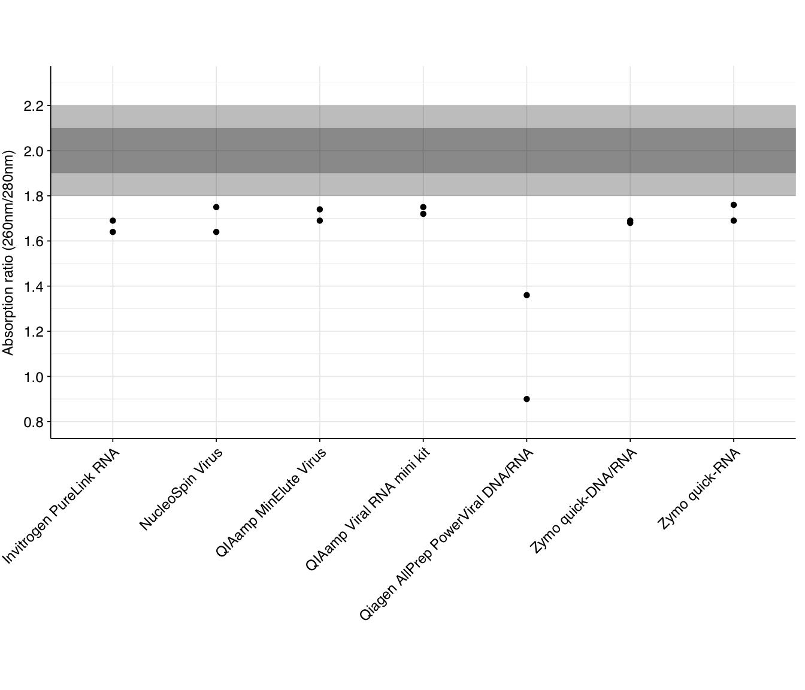
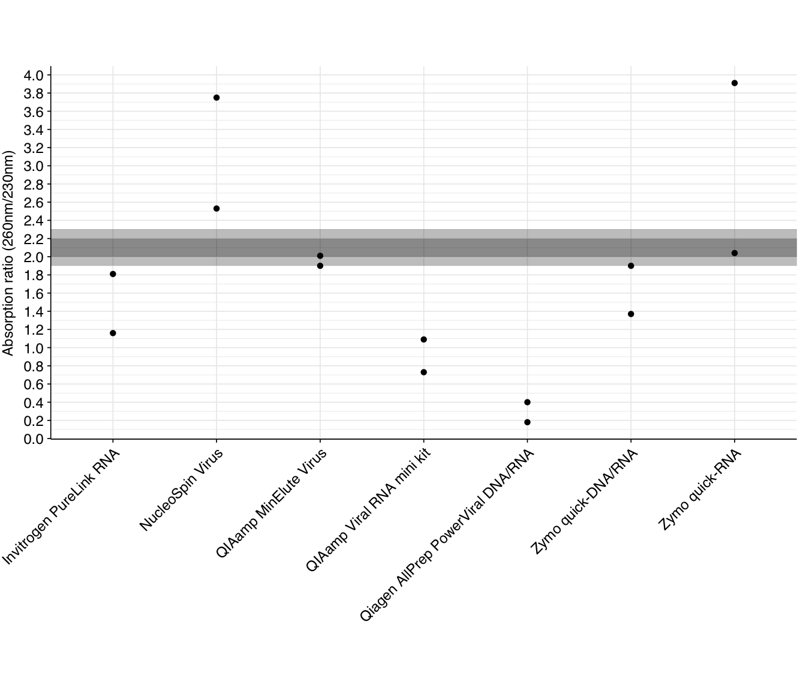
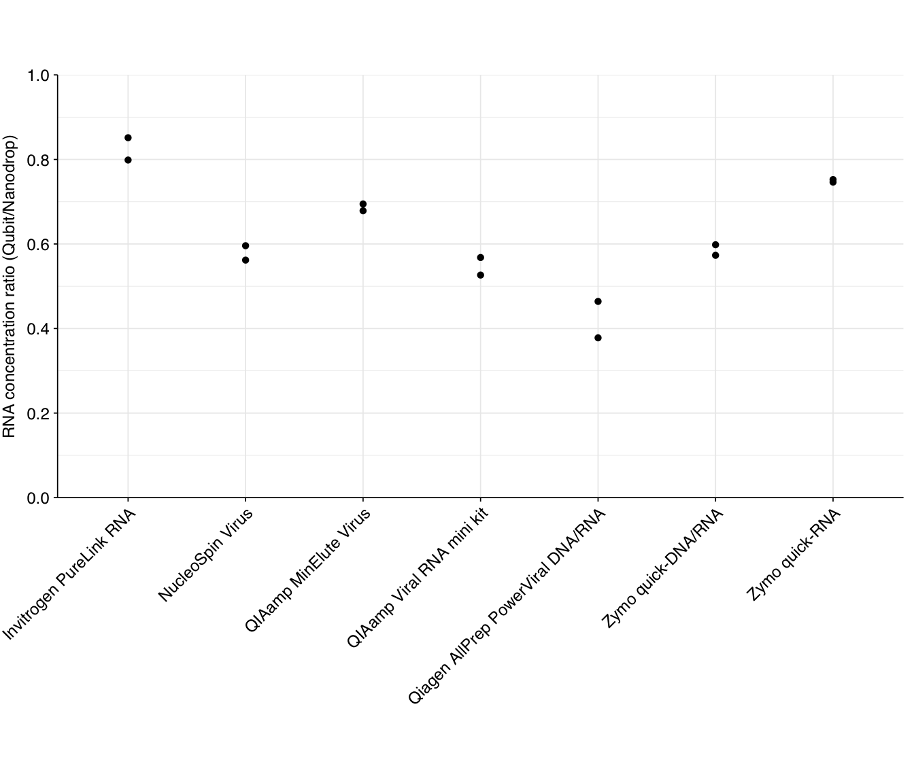

Code
inpath <- "../data/2023-09-11_extraction-expt-2.tsv"
data <- read_tsv(inpath, show_col_types = FALSE)
dataTable 1: Data from extraction experiment
See also:
Nanodrop and RNA Qubit assays were performed on replicates A and B of each kit, after DNA digestion with DNase.Fragment Analyzer was run on replicate A of each kit.
inpath <- "../data/2023-09-11_extraction-expt-2.tsv"
data <- read_tsv(inpath, show_col_types = FALSE)
dataTable 1: Data from extraction experiment
Raw total concentration readings for each of the instruments are shown below:
data_processed <- data %>% select(sample,kit,replicate,elution_volume,contains("ngul")) %>%
gather(instrument, concentration, -sample, -kit, -replicate, -elution_volume) %>%
mutate(instrument = str_to_title(gsub("_.*", "", instrument)),
instrument = gsub("Fa", "Fragment Analyzer", instrument),
concentration_adj = concentration/elution_volume * 100)
g_conc <- ggplot(data_processed, aes(x=kit, y=concentration, color=instrument)) +
geom_point(shape = 16, na.rm = TRUE) +
scale_y_continuous(limits = c(0,40), breaks = seq(0,40,10),
name = "Concentration (ng/ul)", expand = c(0,0)) +
scale_x_discrete(name = "Extraction Kit") +
scale_color_brewer(palette = "Dark2", name = "Instrument") +
theme_base +
theme(axis.text.x = element_text(hjust = 1, vjust = 1, angle = 45),
axis.title.x = element_blank(),
legend.position = "bottom")
g_conc
Readings from Nanodrop and Qubit correlate well with both Pearson’s linear correlation coefficient and Spearman’s rho. Fragment Analyzer readings correlate well with other instruments using Pearson but not Spearman (indicating that it generates different rankings):
cor_qubit_nanodrop <- data %>%
summarize(pearson = cor(qubit_rna_ngul, nanodrop_rna_ngul),
spearman = cor(qubit_rna_ngul, nanodrop_rna_ngul, method = "spearman")) %>%
mutate(instrument1 = "Qubit", instrument2 = "Nanodrop")
cor_qubit_fa <- data %>% filter(!is.na(fa_rna_ngul)) %>%
summarize(pearson = cor(qubit_rna_ngul, fa_rna_ngul),
spearman = cor(qubit_rna_ngul, fa_rna_ngul, method = "spearman")) %>%
mutate(instrument1 = "Qubit", instrument2 = "Fragment Analyzer")
cor_nanodrop_fa <- data %>% filter(!is.na(fa_rna_ngul)) %>%
summarize(pearson = cor(nanodrop_rna_ngul, fa_rna_ngul),
spearman = cor(nanodrop_rna_ngul, fa_rna_ngul, method = "spearman")) %>%
mutate(instrument1 = "Nanodrop", instrument2 = "Fragment Analyzer")
cor_all <- bind_rows(cor_qubit_nanodrop, cor_qubit_fa, cor_nanodrop_fa) %>%
select(instrument1, instrument2, pearson, spearman)
cor_allg_qubit_fa <- ggplot(data, aes(x=qubit_rna_ngul, y=fa_rna_ngul)) +
geom_point(shape = 16, na.rm = TRUE) +
#geom_text_repel(aes(label=kit), box.padding = 0.2, size=3) +
scale_x_continuous(name = "Qubit concentration (ng/ul)") +
scale_y_continuous(name = "FA concentration (ng/ul)") +
theme_base + theme(aspect.ratio = 1)
g_qubit_nanodrop <- ggplot(data, aes(x=qubit_rna_ngul, y=nanodrop_rna_ngul)) +
geom_point(shape = 16, na.rm = TRUE) +
#geom_text_repel(aes(label=kit), box.padding = 0.2, size=3) +
scale_x_continuous(name = "Qubit concentration (ng/ul)") +
scale_y_continuous(name = "Nanodrop concentration (ng/ul)") +
theme_base + theme(aspect.ratio = 1)
g_nanodrop_fa <- ggplot(data, aes(x=nanodrop_rna_ngul, y=fa_rna_ngul)) +
geom_point(shape = 16, na.rm = TRUE) +
#geom_text_repel(aes(label=kit), box.padding = 0.2, size=3) +
scale_x_continuous(name = "Nanodrop concentration (ng/ul)") +
scale_y_continuous(name = "FA concentration (ng/ul)") +
theme_base + theme(aspect.ratio = 1)
g_qubit_nanodrop + g_qubit_fa + g_nanodrop_fa
Nanodrop estimates are consistently higher than Qubit, as (with the exception of Qiagen AllPrep) are Fragment Analyzer estimates. This is expected, as the Qubit assay is highly specific to RNA while the others are affected by residual DNA and (in the case of Nanodrop) various contaminants.
In terms of raw yield, the QIAamp MinElute Virus, QIAamp Viral RNA mini kit, and Zymo quick-RNA kit come out the best here. The Qiagen AllPrep PowerViral kit does notably worse than the other kits.
The above analysis looked at the raw outputs of the instrument readings, reflecting the concentrations of each sample after normalizing elution volume. Briefly, each sample was eluted in the volume specified in Table 1 (elution_volume) , then the eluent was diluted to 100ul. This results in readings that are proportional to the total yield achieved by each extraction kit, rather than the raw concentration in the undiluted eluent. However, for sequencing, we might want to use the undiluted eluent, in order to achieve higher concentrations. Hence, it’s useful to look at the concentrations and other readings we would have gotten had we performed the tests on the raw eluent.
Adjusting total concentration for elution volume is easy; we simply divide the reported concentration by the elution volume, then multiply by 100 (the maximum elution volume across all kits). This gives us the following results:
g_conc_adj <- ggplot(data_processed, aes(x=kit, y=concentration_adj, color=instrument)) +
geom_point(shape = 16, na.rm = TRUE) +
scale_y_continuous(limits = c(0,80), breaks = seq(0,80,20),
name = "Concentration (ng/ul)", expand = c(0,0)) +
scale_x_discrete(name = "Extraction Kit") +
scale_color_brewer(palette = "Dark2", name = "Instrument") +
theme_base +
theme(axis.text.x = element_text(hjust = 1, vjust = 1, angle = 45),
axis.title.x = element_blank(),
legend.position = "bottom")
g_conc_adj
The most obvious result of adjusting for elution volume is that the Zymo quick-RNA kit looks much better, as this kit already had good yield with the smallest elution volume. The Nucleospin Virus and QiaAmp Viral kits receive smaller boosts in performance. Conversely, those kits with large elution volumes (Invitrogen PureLink, QIAamp MinElute, Qiagen AllPrep PowerViral, and Zymo quick-DNA/RNA) look relatively worse.
Surprisingly (to me), adjusting for elution volume dramatically increased the correlation between the different instruments:
data_adj <- data %>%
mutate(qubit_rna_ngul_adj = qubit_rna_ngul / elution_volume * 100,
nanodrop_rna_ngul_adj = nanodrop_rna_ngul / elution_volume * 100,
fa_rna_ngul_adj = fa_rna_ngul / elution_volume * 100)
cor_qubit_nanodrop_adj <- data_adj %>%
summarize(pearson = cor(qubit_rna_ngul_adj, nanodrop_rna_ngul_adj),
spearman = cor(qubit_rna_ngul_adj, nanodrop_rna_ngul_adj, method = "spearman")) %>%
mutate(instrument1 = "Qubit", instrument2 = "Nanodrop")
cor_qubit_fa_adj <- data_adj %>% filter(!is.na(fa_rna_ngul)) %>%
summarize(pearson = cor(qubit_rna_ngul_adj, fa_rna_ngul_adj),
spearman = cor(qubit_rna_ngul_adj, fa_rna_ngul_adj, method = "spearman")) %>%
mutate(instrument1 = "Qubit", instrument2 = "Fragment Analyzer")
cor_nanodrop_fa_adj <- data_adj %>% filter(!is.na(fa_rna_ngul)) %>%
summarize(pearson = cor(nanodrop_rna_ngul_adj, fa_rna_ngul_adj),
spearman = cor(nanodrop_rna_ngul_adj, fa_rna_ngul_adj, method = "spearman")) %>%
mutate(instrument1 = "Nanodrop", instrument2 = "Fragment Analyzer")
cor_all_adj <- bind_rows(cor_qubit_nanodrop_adj, cor_qubit_fa_adj, cor_nanodrop_fa_adj) %>%
select(instrument1, instrument2, pearson, spearman)
cor_all_adjg_qubit_fa_adj <- ggplot(data_adj, aes(x=qubit_rna_ngul_adj, y=fa_rna_ngul_adj)) +
geom_point(shape = 16, na.rm = TRUE) +
#geom_text_repel(aes(label=kit), box.padding = 0.2, size=3) +
scale_x_continuous(name = "Adj. Qubit concentration (ng/ul)") +
scale_y_continuous(name = "Adj. FA concentration (ng/ul)") +
theme_base + theme(aspect.ratio = 1)
g_qubit_nanodrop_adj <- ggplot(data_adj, aes(x=qubit_rna_ngul_adj, y=nanodrop_rna_ngul_adj)) +
geom_point(shape = 16, na.rm = TRUE) +
#geom_text_repel(aes(label=kit), box.padding = 0.2, size=3) +
scale_x_continuous(name = "Adj. Qubit concentration (ng/ul)") +
scale_y_continuous(name = "Adj. Nanodrop concentration (ng/ul)") +
theme_base + theme(aspect.ratio = 1)
g_nanodrop_fa_adj <- ggplot(data_adj, aes(x=nanodrop_rna_ngul_adj, y=fa_rna_ngul_adj)) +
geom_point(shape = 16, na.rm = TRUE) +
#geom_text_repel(aes(label=kit), box.padding = 0.2, size=3) +
scale_x_continuous(name = "Adj. Nanodrop concentration (ng/ul)") +
scale_y_continuous(name = "Adj. FA concentration (ng/ul)") +
theme_base + theme(aspect.ratio = 1)
g_qubit_nanodrop_adj + g_qubit_fa_adj + g_nanodrop_fa_adj
I’m not sure why this should be; it’s as though some of the instruments are adjusting for the post-elution dilution more than others, which doesn’t make much sense to me. Still, it’s helpful validation that all the instruments are producing useful readouts.
The fragment size distributions measured by the Fragment Analyzer are as follows:

With the exception of the AllPrep PowerViral kit (sample 20, in purple) all of the kits show similar size distributions, with significant fragment density between roughly 100 and 500 nt and peaks around 140 and 175 nt. All samples are lacking the large peak at 115nt seen in the FemtoPulse analysis of earlier influent samples, as well as the heavy tail of long fragments.
The standard measures of nucleic acid purity from Nanodrop measurements are the 260/280 and 260/230 absorption ratios. The standard advice is that, for a pure RNA sample, 260/280 should be around 2.0, while pure DNA should be around 1.8. Lower ratios are typically indicative of contamination with protein, or some specific contaminants such as phenol.
The 260/280 ratios measured for the DNase-treated samples are as follows:
g_260_280 <- ggplot(data) +
geom_rect(ymin = 1.8, ymax = 2.2, xmin = 0, xmax = Inf, fill = "black", alpha = 0.02) +
geom_rect(ymin = 1.9, ymax = 2.1, xmin = 0, xmax = Inf, fill = "black", alpha = 0.02) +
geom_point(aes(x=kit, y=nanodrop_rna_260_280), shape = 16) +
scale_y_continuous(limits = c(0.8, 2.3), breaks = seq(0,5,0.2),
name = "Absorption ratio (260nm/280nm)") +
theme_base +
theme(axis.text.x = element_text(hjust = 1, vjust = 1, angle = 45),
axis.title.x = element_blank(),
legend.position = "bottom")
g_260_280
None of the kits returned 260/280 ratios at the expected level for pure RNA, though most were not drastically low. Several returned ratios close to (though below) 1.8, which might be indicative of significant residual DNA in the sample; it’s hard to distinguish between this and protein contamination without doing DNA Qubit measurements on the DNase-treated samples. Free dNTP nucleotides produced by the DNase treatment still absorb at DNA-like ratios, so DNA-like readings may not be indicative of poor quality here.
As with yield, the Qiagen AllPrep PowerViral kit does notably worse than the other kits.
The 260/230 absorption ratio gives a useful indicator of the presence of various contaminants, including phenol, carbohydrates, guanidine, and various salts. The standard advice is that a pure sample should have a 260/230 of around 2.0-2.2, with lower ratios indicating contamination. Readings for our DNase-treated samples are as follows:
g_260_230 <- ggplot(data) +
geom_rect(ymin = 1.9, ymax = 2.3, xmin = 0, xmax = Inf, fill = "black", alpha = 0.02) +
geom_rect(ymin = 2.0, ymax = 2.2, xmin = 0, xmax = Inf, fill = "black", alpha = 0.02) +
geom_point(aes(x=kit, y=nanodrop_rna_260_230), shape = 16) +
scale_y_continuous(#limits = c(0.8, 2.3),
breaks = seq(0,5,0.2),
name = "Absorption ratio (260nm/230nm)") +
theme_base +
theme(axis.text.x = element_text(hjust = 1, vjust = 1, angle = 45),
axis.title.x = element_blank(),
legend.position = "bottom")
g_260_230
As we can see, many kits have significantly lower 260/230 ratios than the recommended range, indicating contamination – most likely with guanidinium salts involved in nucleic acid extraction. Combined with the 260/280 results above, this suggests that many kits would benefit from an additional cleanup step. As with other metrics, the Qiagen AllPrep PowerViral kit comes out looking worst.
Two kits (NucleoSpin Virus and Zymo quick-RNA) have at least one replicate with significantly higher 260/230 ratios than the recommended values. It’s not very clear what could cause this, but one resource I found suggested misblanking as the likely culprit. I’d recommend repeating the nanodrop measurements for these samples to see if the pattern persists.
An informal heuristic measurement of quality is to compare the measured RNA concentration with Qubit (which is highly specific) to Nanodrop (which is not); the higher the latter compared to the former, the more other material is likely contributing to the Nanodrop reading. The ratios for our DNase-treated samples are as follows:
g_ratio <- ggplot(data, aes(x=kit,y=qubit_nanodrop_ratio)) +
geom_point(shape = 16) +
scale_y_continuous(limits = c(0,1), breaks = seq(0,1,0.2),
name = "RNA concentration ratio (Qubit/Nanodrop)", expand = c(0,0)) +
scale_x_discrete(name = "Extraction Kit") +
theme_base +
theme(axis.text.x = element_text(hjust = 1, vjust = 1, angle = 45),
axis.title.x = element_blank(),
legend.position = "bottom")
g_ratio
According to this metric, the Invitrogen PureLink RNA, QIAamp MinElute Virus, and Zymo quick-RNA kits come out looking relatively good, while the Qiagen AllPrep PowerViral kit comes out looking worst.